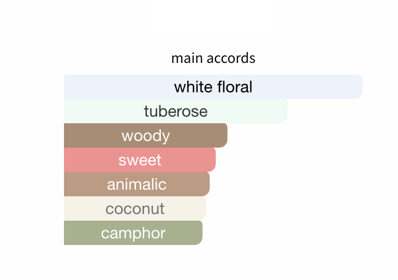
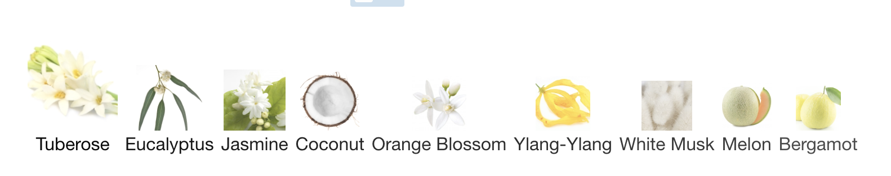

how to discover a scent
you were given a large basket of weird niche fragrances, how do you know where to start?
steps:
- you can look at the names on the sides of the vials and see if any are interesting to you. then you can search the name on my fragrantica, where I have logged each and every one that I have aquired testers of.
- say you liked the name, carnal flower. click on the perfume name or search it up on the site.
- you can see accords, which are abstract ideas of smell used to describe a scent. 
- then when you scroll, you can see notes. notes are usually names of ingredients or other "essences" of the scent. they are still up to interpretation by those who enter the properties of the scent on this site. like wikipedia. 
- try it out on your wrist. the first thing you smell is considered a "top note"
- the middle notes are in between the top and base notes. i think of them like the ones that I can sometimes sense but not always. they come and go depending on your memory, environment, etc.
- the base notes are the most stable and stay on the longest. i like things that have powdery or incense as their base notes. they smell the most like paper in a book to me or dusty wood pews.